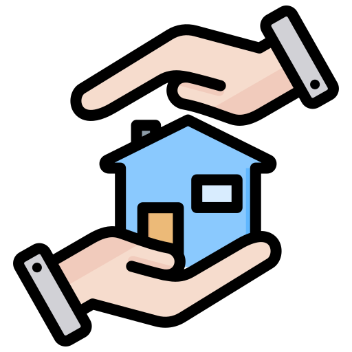

What Makes Us Unique
Holistic, Person-Centred Care
Tailored support that respects each individual's unique journey, promoting dignity and long-term independence.
Wide Range of Support
From forensic mental health to Autism, ADHD, and learning difficulties, we provide comprehensive care under one roof.
Strong Local Partnerships
We work closely with Sheffield and Rotherham Councils and NHS services to provide seamless, joined-up support.

Safe, Managed Housing
Our fully managed, secure accommodations provide a stable environment with trained support staff.

Empowerment & Life Skills
We focus on independence by teaching budgeting, tenancy management, and daily living skills.

Culturally Inclusive Care
We provide respectful support for individuals from all backgrounds, with cultural sensitivity at our core.